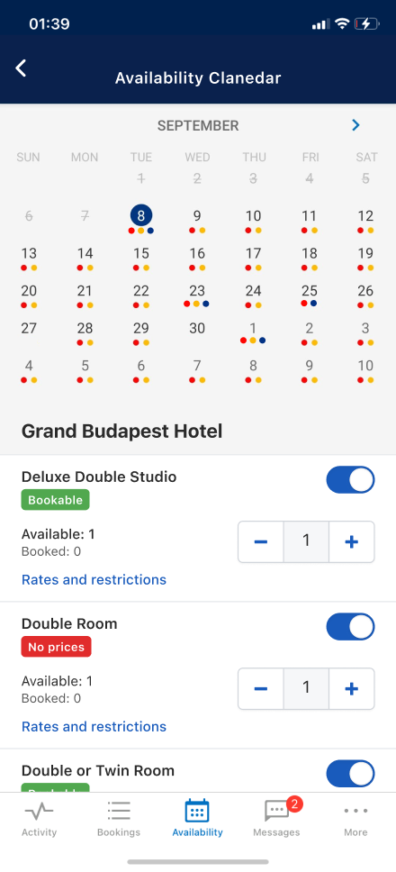
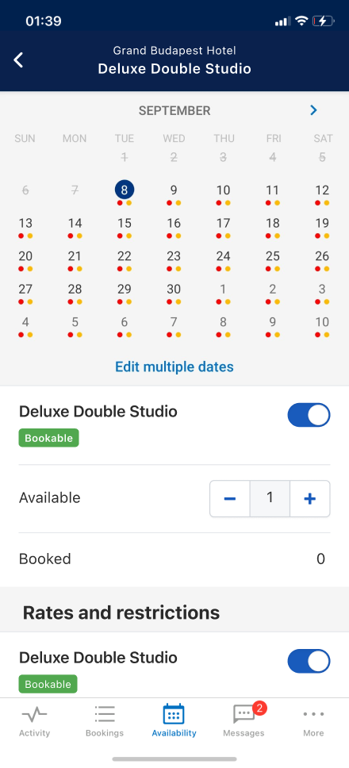
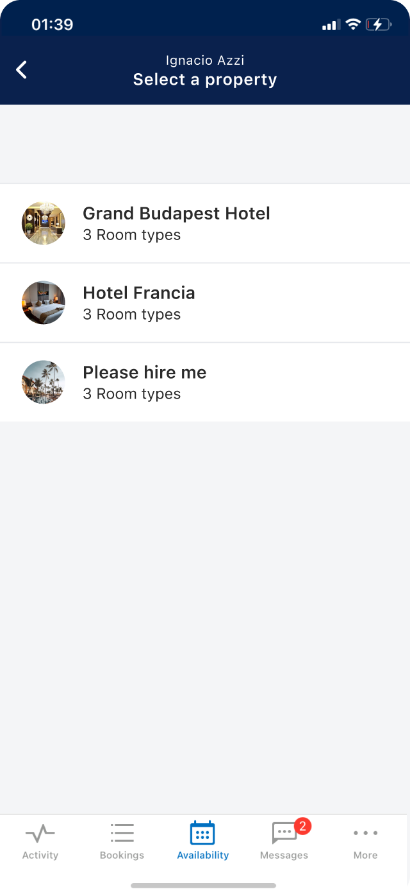
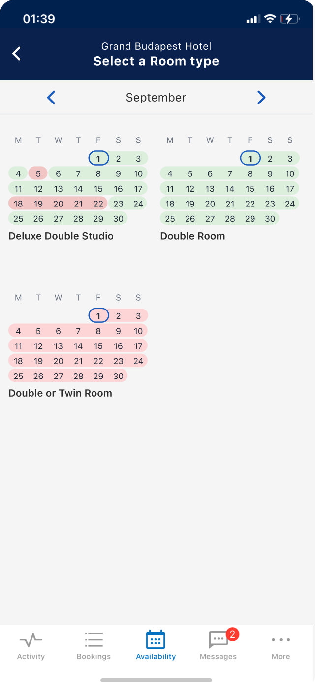
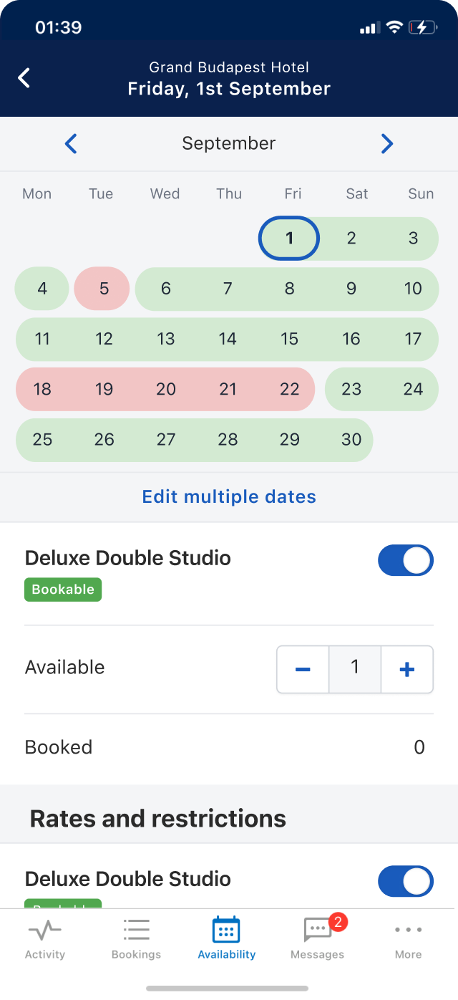

Booking.com · 2018–2022
Partners struggled to understand their room status. The calendar used ambiguous colored dots and a flat information architecture that made it impossible to identify which room had an issue on which date. 30% of surveyed partners cited room status comprehension as their biggest pain point.
Sole designer on the AV Pulse team. I redesigned the Availability Calendar across Android and iOS, owning the project from design sprint through Beta launch — 7 months of iterative research, design decisions, and cross-team collaboration.
71% partner satisfaction (up from 65% baseline).
75.7% Beta retention across ~3,900 partners.
No negative impact on support tickets, bookings, or app stability.
Context
Pulse is Booking.com's mobile app for accommodation partners, available in 43 languages on Android and iOS. At the time of this project, it served over 1.25 million active partners who used it to manage reservations, respond to guests, and update availability and rates on the go.
For many of them, especially smaller property owners , Pulse is their main interface with the platform.
The Availability tab was widely regarded as the most complex section of the app.
Research showed that a cluttered UI was confusing partners, losing their time scrolling through long room lists, and unable to tell why a room was unbookable or how to fix it.


The redesign was shaped by continuous partner research across 7 months, followed by validation through a Beta program, partner visits, and multiple A/B experiments divided in phases.
The Availability Calendar problem was complex enough that it needed alignment and feedback from people with different backgrounds. With that in mind, I organized a two-day design sprint and invited researchers, PMs, and designers from across Pulse and Extranet teams.
Day 1 focused on research sharing and problem alignment. Day 2 focused on solution drafting, feedback, and voting.
My concept proposed a hierarchy based on progressive disclosure (Property > Room overview > Calendar), with color-coded cells replacing dots and guidance messages explaining room status. It was the most voted concept and became the blueprint for all subsequent iterations.
From flat list with dots to structured hierarchy with clear status



Personalising the experience for over a million partners with vastly different setups isn't straightforward. I designed a system of three screens that adapts to each segment by showing only what's relevant. One architecture, zero redundant engineering
A color-coded calendar replaces hard-to-read dots. Each cell makes availability status immediately clear — no interpretation needed.
|
11
12
1314
18
19
2021
|
11
12
1314
18
19
2021
|
|
| Dots | Full Cells | |
|---|---|---|
| Readability |
Small and hard to distinguish at a glance. |
Full cell color status visible immediately. |
| Date Relationship |
Dot floats above the date, connection is implied. |
Cell is the date, relationship is direct. |
| Accessibility |
Low contrast, fails WCAG standards. |
Color + size meets accessibility requirements. |
| Reassurance |
Ambiguous: Unclear if white or empty space means "available."
| perf
Unambiguous: Green cells confirm rooms are bookable, aligning with desktop.
|
When a room can't be booked, a contextual message tells partners exactly what to do next — reducing confusion and support requests.
| Room status | Guidance message |
|---|---|
BookableRoom is open and available for guests to book. |
No message needed.
|
Sold outFully booked. No availability left for this date. |
"Sold out: To make this unit available, add availability"
|
UnbookableClosed, no rates set, or restricted by minimum stay. |
"No rates: Add at least one rate to make this room bookable"
"Restricted: Remove the minimum length of stay restriction"
|
Process · Validation
Three rounds of Design Labs and Open Labs ran between January and March 2019. Open Labs were internal sessions with Customer Service agents, who had frontline knowledge of partner pain points. By March, the core concept was stable.
In May, I created HTML prototypes for remote usability testing. Working with our UX Researcher, I defined the research questions, interviewed partners directly, and co-facilitated six sessions. Partners preferred colored cells over dots, understood the hierarchy, and valued the guidance messages.
In October, eight partners were visited in Amsterdam. One key tension surfaced: partners couldn't distinguish "fully booked" from "closed." This led to reintroducing a third color (yellow for "sold out") alongside green and red.
Experimentation
Segmented by partner type to manage risk
The design direction carried through to full A/B experiments on both platforms. Satisfaction reached 71.11%, exceeding the 65% baseline. There were no impact on support tickets, bookings, or app stability.
Reflections
Every research session surfaced confusion between "fully booked" and "closed." We could have saved a cycle by testing three colors from the start.
Partners with 10+ room types flagged clutter concerns in June 2019. We didn't address it before Beta. Pagination or grouping would have mitigated this.